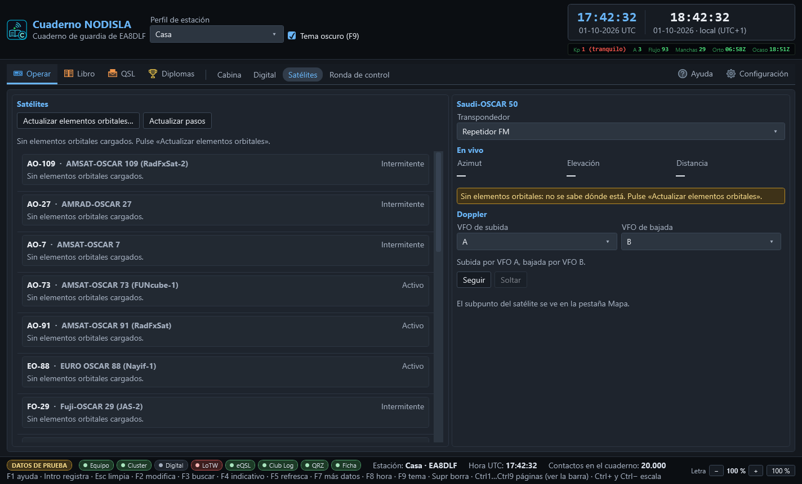

Satélites
Operar › Satélites (Ctrl 7) tiene dos columnas: a la izquierda el catálogo con el próximo paso de cada satélite, a la derecha el satélite elegido con sus datos en vivo y el seguimiento Doppler.


El catálogo y el próximo paso
La lista de la izquierda trae los satélites de aficionado en servicio — activos e intermitentes —, cada uno con su próximo paso por encima del horizonte. El texto del paso cambia de color según lo que diga:
- Gris apagado — todavía no hay elementos orbitales cargados para ese satélite; no se puede calcular nada hasta pulsar «Actualizar elementos orbitales…».
- Ámbar — el paso es rasante: sube poco antes de volver a ponerse, así que cualquier obstáculo (un edificio, un árbol) puede tapar la ventana de trabajo casi entera.
- Rojo — los elementos orbitales de ese satélite son viejos: el cálculo del paso ya no es de fiar y conviene actualizarlos antes de confiar en la hora que da.
Ningún dato se descarga solo: «Actualizar elementos orbitales…» es la única puerta a la red de esta pantalla, y hay que pulsarla a propósito. «Actualizar pasos» solo recalcula con lo que ya hay descargado, sin salir a internet.
El satélite elegido: en vivo
Al elegir un satélite de la lista aparece, a la derecha, su transpondedor (repetidor de FM, lineal, digital o baliza, según lo que tenga) y tres datos que se actualizan solos mientras la página está abierta: azimut, elevación y distancia. Si el satélite está por debajo del horizonte en ese momento, lo dice con un aviso en vez de enseñar cifras que no significan nada.
Doppler: seguir y soltar
Con el equipo conectado y dando sus dos VFO, se puede elegir cuál sigue la subida y cuál la bajada, y pulsar «Seguir»: a partir de ahí el cuaderno corrige la frecuencia de cada VFO en tiempo real para compensar el Doppler del paso, sin que haga falta perseguirlo a mano. «Soltar» para de tocar el equipo en cualquier momento. Mientras se sigue, se ven los dos desplazamientos aplicados, en hercios, y un aviso si el equipo no informa de sus dos VFO — en ese caso no hay manera de seguir el Doppler y la pantalla lo dice en vez de fallar en silencio.
El seguimiento solo mueve frecuencia: nunca toca el PTT ni el modo del equipo por su cuenta.
El subpunto en el mapa
Mientras hay un satélite elegido, su subpunto —el lugar de la superficie terrestre sobre el que vuela en ese instante— se dibuja como una marca más en Libro › Mapa, junto a los contactos y los spots del cluster.